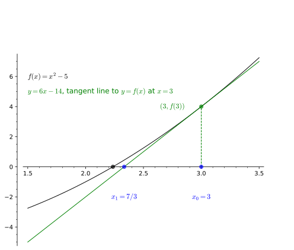

Introduction to Calculus
Killian O’Brien
6G4Z3006 Calculus
Tutorial Week 01 - Wed 29 Jan 2005
Some background on \(\sqrt{5}\)
- Your calculator/computer will tell you that \(\sqrt{5}\) is \[\sqrt{5} = 2.236067977 \dots.\]
- The decimal expansion will go on forever, any finite decimal
expansion can only ever be an approximation to \(\sqrt{5}\).
- \(\sqrt{5}\) is an
irrational number, i.e. it cannot be given as a ratio
of integers, \(a/b\), where \(a,b \in \mathbb{Z}\).
- In fact, we can show (see the level 5 Number Theory and Abstract
Algebra unit) that for every integer \(m\), its square root \(\sqrt{m}\) will either be an integer
itself, or if not, it will be irrational.
- However, it’s also true that any irrational number can be
approximate arbitrarily closely by rationals.
- But in general, to get better and better rational approximations to
an irrational, we will need larger and larger denominators.
Tutorial intro activity
- In this tutorial we will get a first look at the important concept
of convergence of sequences.
- We’ll also see some examples of proof by
induction.
- Don’t worry if these concepts are new and unfamiliar to you. This is
a first look.
From the APEX Calculus
textbook
- Let’s quickly read about
Newton’s
method for finding roots/zeros of functions.
Approximating \(\sqrt{5}\) with
Newton’s method and recurrence relations
- We want to approximate \(\sqrt{5}\), so we shall consider a function
\(f\), defined by, \[f(x) = x^2 - 5,\] with an initial
approximation of \(x_0 = 3\).
- This leads to an infinite sequence of values \[x_0, x_1, x_2, x_3, \dots,\] with \(x_0=3\), satisfying the recurrence
relation \[ x_{n+1} = x_n -
\frac{x_n^2 - 5}{2x_n}.\]
- This sequence should converge to \(\sqrt{5}\), i.e. \[\lim_{n \to \infty} x_n = \sqrt{5}.\] In
this tutorial we will work towards a proof of this claim about this
sequence.
Deriving our recurrence relation
- Task 1. Use Newton’s recurrence relation
\[ x_{n+1} = x_n -
\frac{f(x_n)}{f'(x_n)},\] to derive our recurrence relation
\[ x_{n+1} = x_n - \frac{x_n^2 -
5}{2x_n}.\]
From \(x_0\) to \(x_1\)
- Task 2. Confirm the equation of the first tangent line and confirm
the value of \(x_1 = 7/3\).

Establishing a lower bound for our sequence
- Task 3. Take our recurrence relation and use it to show that for all
\(m \geq 1\) we have \(x_m > 0\).
- Hints:
- Rewrite the recurrence in the form \[x_{n+1} = \frac{1}{2x_n} \Big ( \dots \Big
)\]
- Then construct an argument that if \(x_n
> 0\) then \(x_{n+1} >
0\).
- We can then use proof by induction to prove that the
sequence is always positive.
- Task 4. Now let’s improve the lower bound by showing that for all
\(m \geq 1\) we have \(x_m > \sqrt{5}\).
- Hint:
- Use the recurrence relation to find a nice expression for \(x_{n+1}^2\) of the form \[x_{n+1}^2 = 5 + \Big ( \dots \Big
)^2\]
- Use proof by induction to prove that for all \(m \geq 1\) we have \(x_m^2 > 5\).
- Then use the result of Task 3 to deduce that in fact \(x_m > \sqrt{5}\).
Proving the sequence is decreasing
Task 5. Now prove the sequence is decreasing,
i.e. for all \(m \geq 1\) we have \(x_m > x_{m+1}\).
Hint:
- Use the recurrence relation to get a nice expression for the
difference \(x_{n+1} - x_n\).
- Use results of earlier tasks to get the decreasing conclusion.
Calling on some theory: For the next step we’ll
need to rely on a theorem about the convergence of monotone (increasing
or decreasing) bounded sequences. This is
Theorem
9.1.32 in APEX Calculus.
So now we know our sequence is convergent, i.e. it has a limit.
Newton’s method claims that this limit should be \(\sqrt{5}\).
Task 6. Prove that our sequence converges to the
limit \(\sqrt{5}\).
Hints:
- Take the limit of both sides of the recurrence relation.
- Use some reasonable assumptions about how limits should behave.
- Deduce that our sequence converges to \(\sqrt{5}\). You will need to argue
carefully about the positive or negative square root.
Task 7.
Now use our recurrence relation to generate a sequence of better
and better rational approximations to \(\sqrt{5}\).
Hint:
- program the recurrence relation into a Python loop.